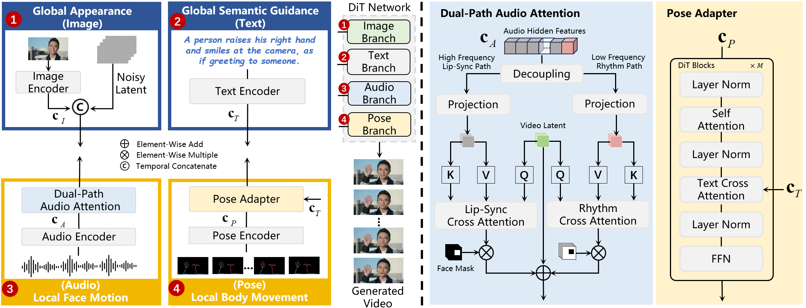

Recent innovations in audio-driven human animation have demonstrated the utility of powerful diffusion models. Nevertheless, given the complex and entangled cues from various modalities, generating human videos with accurate lip-sync and coordinated body movement remains a grand challenge. To address this issue, we present IdolStudio, a novel transformer-based video diffusion framework that devises a multimodal synergistic control strategy by exploring inherent and cross-modal correlations in human animation. Technically, IdolStudio anchors the denoising process with global appearance from a reference image, and steers global semantic guidance with the text prompt. A dual-path audio attention (DPAA) module decomposes audio signals into high- and low-frequency components, regulating video denoising at face and body regions, respectively, to advance lip-sync face and rhythmic body generation. Furthermore, IdolStudio introduces a pose adapter (PAD) to learn explicit pose conditions from text prompt as the guidance for video denoising. Such a learning paradigm enables the body movement to be controlled by either textual descriptions or a concrete human pose sequence. Extensive experiments conducted on three public datasets demonstrate the efficacy of our IdolStudio for generating high-fidelity audio-driven human animation, in terms of both accurate lip-sync and controllable body movement.

An overview of our IdolStudio, which features a multimodal diffusion transformer (DiT) backbone with specialized modules of Dual-Path Audio Attention and Pose Adapter. The whole framework is capable of integrating reference image, textual description, audio signal and pose sequence to synthesize temporally coherent human videos.
Due to file size limitations for supplementary materials, we have compressed the video quality and limited the duration. A few long video samples (over 8 seconds) are provided for reference.
IdolStudio delivers exceptional portrait animation via our Dual-Path Audio Attention (DPAA) module. By decoupling audio features, the model uses high-frequency components for precise lip-sync and low-frequency components to drive natural head dynamics. The results demonstrate that our method achieves SOTA-level lip alignment while simultaneously generating vivid, lifelike facial expressions and head movements.
In the challenging "Audio + Pose" scenario, IdolStudio leverages multimodal synergistic control. Our lightweight Pose Adapter (PAD) injects explicit motion guidance without disrupting the audio-driven lip synchronization. The visualizations show that IdolStudio perfectly executes complex pose sequences (e.g., dancing) while maintaining accurate lip movements and fine hand details, successfully resolving the conflict between pose precision and facial fidelity.
IdolStudio enables semantic motion generation through the unique training curriculum of our Pose Adapter (PAD). By learning cross-modal correlations between text and motion, the model can interpret high-level instructions like "waving" or "crossing arms." The results confirm that users can drive complex, coherent body actions using simple text prompts alone, offering unprecedented flexibility for character interaction without needing explicit pose references.
Hover over the video player to view the text prompt.
Even with audio-only input, IdolStudio generates dynamic half-body and full-body animation by mining the inherent correlations in speech. The DPAA module utilizes audio prosody and rhythm to infer corresponding body sway and gestures. The results exhibit natural, rhythm-driven motion that brings the avatar to life solely from the audio track.